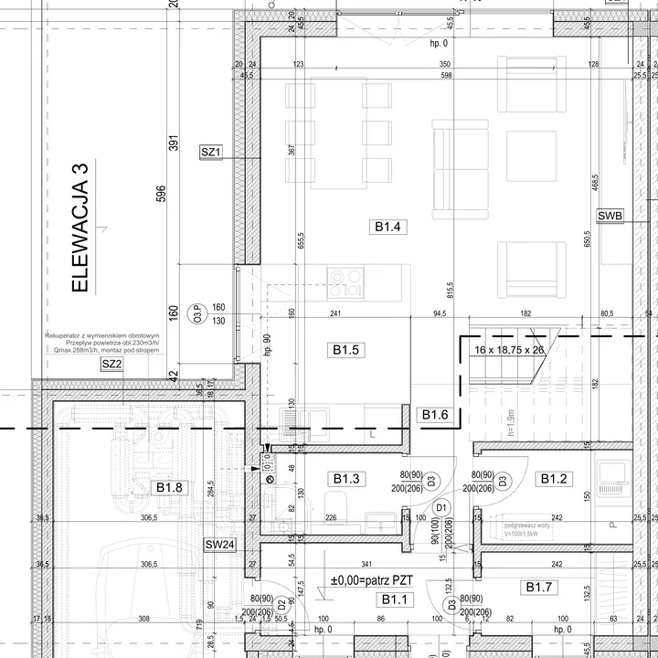

Wirtualny spacer.
Dom typu B: pokój dzienny, jadalnia z kuchnią, hol, ogród i wejście. Przeciągnij obraz, żeby się rozejrzeć, i wybierz punkt, żeby przejść dalej.

Przeciągnij, żeby się rozejrzeć
Na czym oparty jest spacer
- Z projektu
- Układ i wymiary ścian, okna, schody oraz rozmieszczenie mebli i sprzętów kuchennych: według rzutu parteru budynku typu B. Położenie domu, tarasu, ogrodu i drogi: według planu zagospodarowania.
- Rzut parteru (PDF)
- Przykładowa aranżacja
- Kolory, materiały, wystrój, zieleń w ogrodzie, osoby i pies. Projekt ich nie określa, a dom jest oddawany w stanie deweloperskim, bez wyposażenia.
- Standard i technologia